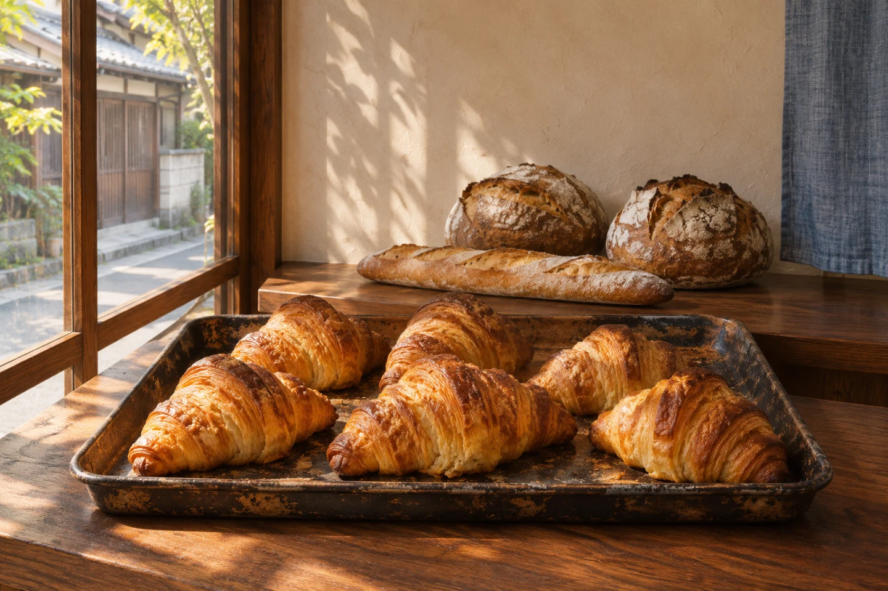
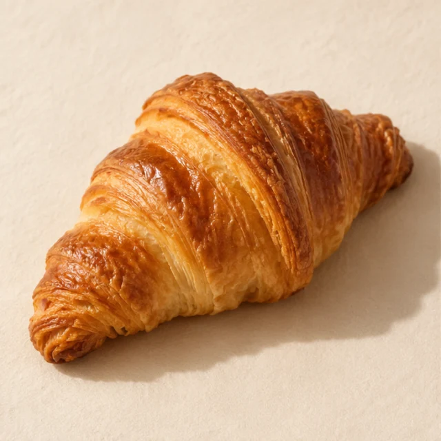
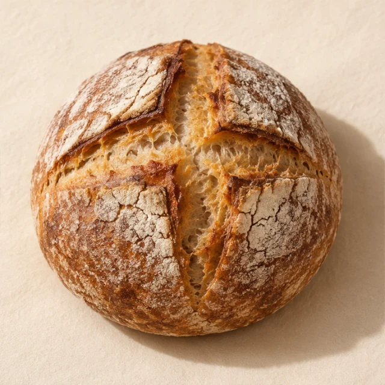
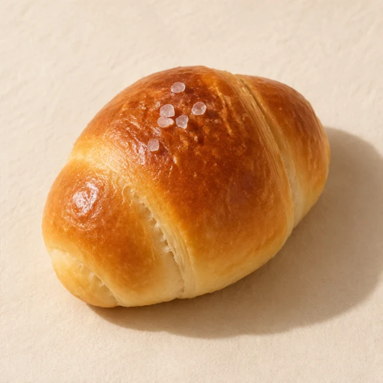

ASAMADO BAKERY
朝の道に、
パンの香り。
出かける前のクロワッサン。夕飯に切り分けるカンパーニュ。いつもの道で、焼きたてのパンを。
焼き上がりを見る ↓
THE MORNING COUNTER
営業時間 8:00–17:00定休日 月・火売り切れ次第終了
08:00
クロワッサン
開店に合わせて。コーヒーのおともに。
パンを見る ↗
10:30
カンパーニュ
昼に合わせて焼く、食事に合う丸パン。
パンを見る ↗
13:00
塩バターロール
午後の便。おやつや、帰り道のひとつに。
パンを見る ↗

クロワッサン
¥320外はさくっと、中はしっとり。発酵バターの香りを楽しむ一品。

カンパーニュ
¥760香ばしい皮ともっちりした中身。厚めに切って、スープと一緒に。

塩バターロール
¥220底のカリッとした部分までおいしい。軽く温めるとバターが香る。
表示価格は税込です。
03 / VISIT US
お店の案内
朝の散歩にも、午後のおやつにも。
- 営業時間
- 8:00–17:00（売り切れ次第終了）
- 定休日
- 月曜日・火曜日
- エリア
- 東京・東中野（作例設定）
東中野駅を地図で見る ↗